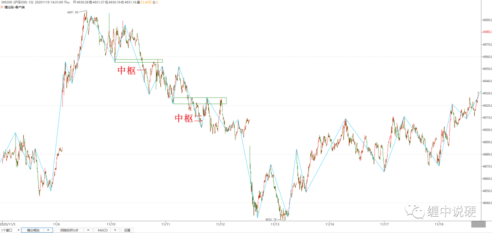
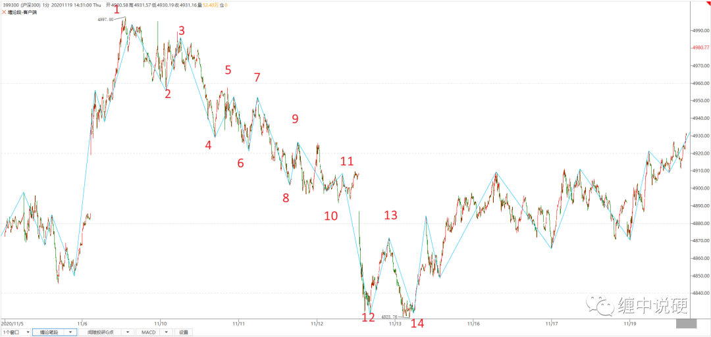
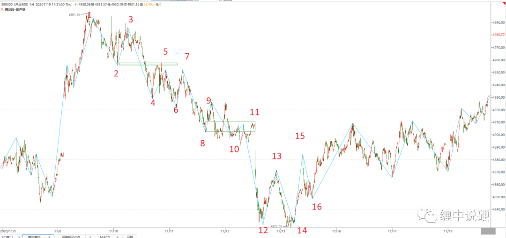

如何运用结合律寻找第一类买点
走势存在多种合理解释，所以走势存在多义性。而结合律在数学上限定了如何解读走势的多意性。
解读走势是为了交易，所以结合律运用的目的是，为了达成有利于交易的目的，这是运用结合律的宗旨。
需要以下基础知识作为理解和运用结合律：
1：数学意义上结合律的解释：
结合律意指在一个包含有二个以上的可结合运算子的表示式，只要算子的位置没有改变，其运算的顺序就不会对运算出来的值有影响。
用字母表示即：a+(b+c)=(a+b)+c。
2：能判断出第一，第二，第三类买卖点。（本文以第一类买卖点为例子）
3：对走势终完美有一定的理解。走势终完美运用的前提是发现第一类买卖点，根据走势终完美，第一类买卖点后，必然存在至少三段有重叠的次级别走势。
举例：

如上图：
1：最高点之后的下跌肯定已经超过3段了，随时可以下跌结束；
2：下跌过程中出现中枢扩张；
3：无法判断出第一类买卖点。

利用结合律从新排列：
上图走势为为
a=12+23+45+56+67+78+89+（9+10）+（10+11）+（11+12）+(13+14)
我们的目的是：
1：尽量消除扩张；
2：尽量找出趋势；
根据以上原则可以将a理解为下图：

a=12+23+45+56+67+78+89+（9+10）+（10+11）+（11+12）+(13+14)
=12+(23+45+56)+67+78+[89+（9+10）+（10+11）]+（11+12）+(13+14)
这么分解的好处是：消除了扩张，找出了趋势，找到了趋势就可以利用同级别视角下，如何量化趋势背驰与小转大（2）找出走势的结束点。